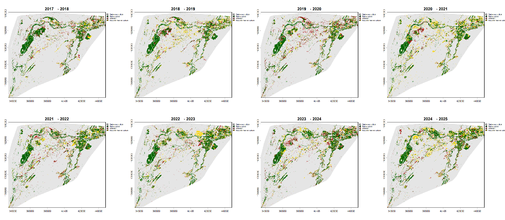
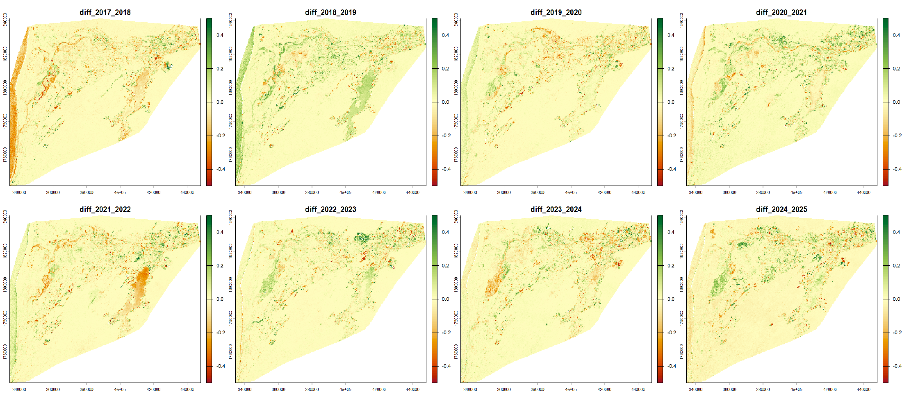
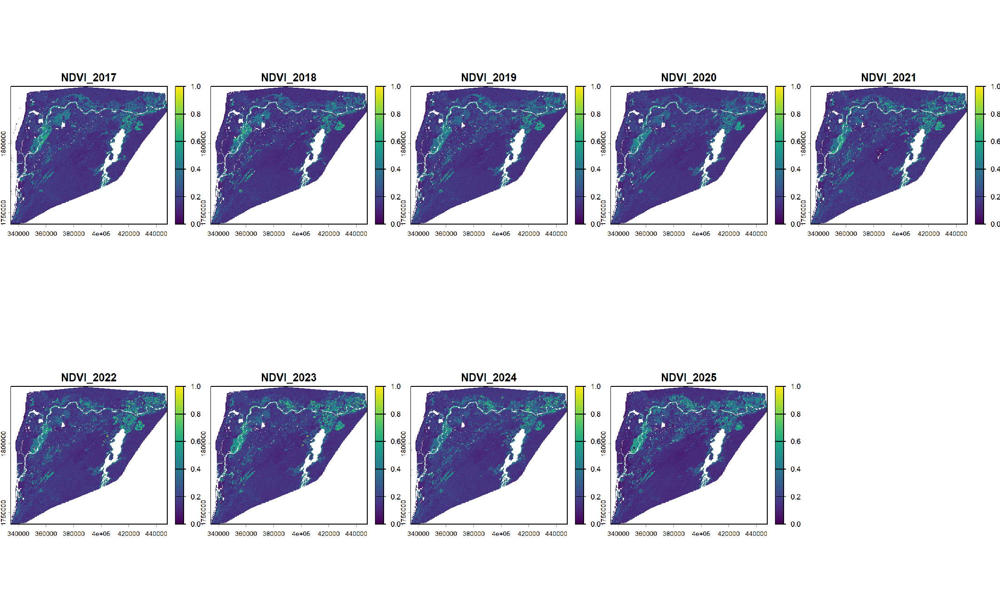

1Zone d’étude et données
La zone d’étude couvre le delta et la basse vallée du fleuve Sénégal, de la côte atlantique jusqu’au secteur de Richard-Toll, soit environ 7 585 km². Elle concentre des périmètres irrigués où dominent la riziculture, la canne à sucre et le maraîchage. L’occupation agricole y varie d’une année à l’autre : aménagement de nouvelles parcelles, abandon, alternance de cultures et de jachères.
Les statistiques de surface portent sur l’ensemble de la zone. Les cartes détaillées présentées ici montrent le secteur de Richard-Toll, entre le fleuve et les grands périmètres irrigués du sud-est. Elles ont été réalisées sous QGIS (projection WGS 84 / UTM zone 28N).
- Capteur
- Sentinel-2, niveau 2A (S2_SR_HARMONIZED)
- Période d’étude
- 2017-2025 : 9 années, un raster NDVI par année
- Mois étudiés
- 1er février – 31 mai de chaque année
- Composite annuel
- Médiane du NDVI sur la fenêtre
- Filtrage des nuages
- Couverture nuageuse < 10 % et masque SCL
- Comparaisons
- 8 périodes, de 2017-2018 à 2024-2025
- Résolution
- 10 m
- Projection
- WGS 84 / UTM zone 28N
- Traitements
- Google Earth Engine, R (terra) et QGIS
2Méthode
-
Calcul du NDVI
L’indice de végétation est calculé à partir des bandes rouge (B4) et proche infrarouge (B8) :
NDVI = (PIR − Rouge) / (PIR + Rouge)
Les images Sentinel-2 de niveau 2A (collection COPERNICUS/S2_SR_HARMONIZED, sous Google Earth Engine) sont sélectionnées chaque année du 1er février au 31 mai, avec une couverture nuageuse inférieure à 10 %. Les pixels classés ombres de nuages, nuages ou cirrus dans la bande de classification de scène (SCL) sont masqués. Le NDVI est ensuite réduit en un raster annuel par la médiane de chaque pixel. La même fenêtre et les mêmes filtres sont utilisés pour les neuf années, ce qui rend les années comparables.
-
Classification cultivé / non cultivé
Un pixel est classé cultivé lorsque son NDVI est supérieur ou égal à 0,30. Ce seuil unique est appliqué à chaque année.
-
Changements entre années consécutives
Les classes de deux années successives sont croisées pour obtenir quatre types de changement. Les huit paires d’années consécutives sont traitées, de 2017-2018 à 2024-2025.
Année N−1 → année N Non cultivé Cultivé Non cultivé Stable non cultivé Nouvelle mise en culture Cultivé Abandon Stable cultivé -
Surfaces
Les surfaces sont obtenues en sommant l’aire de chaque pixel (en hectares) pour chaque classe et chaque période.
-
Tendances pluriannuelles
Une tendance monotone du NDVI est recherchée pour chaque pixel par le test de Mann-Kendall (seuil de 5 %). L’ampleur de la tendance est estimée par la pente de Sen. Le test est appliqué sans correction des ex æquo.
3Résultats
3.1 Cartes annuelles des changements
Chaque carte compare deux années consécutives : la période « 2020-2021 » montre les changements survenus entre l’année 2020 et l’année 2021. Période d’étude : 2017-2025, mois étudiés : février à mai.
Comparer deux périodes
3.2 Surface cultivée
Surface cultivée par année (ha)
La surface cultivée oscille entre 83 624 ha (2020) et 105 793 ha (2025). Les creux de 2018 et de 2020 sont suivis de remontées marquées en 2019 et en 2021. L’axe vertical ne part pas de zéro afin de rendre ces écarts lisibles.
3.3 Mises en culture et abandons
Surfaces concernées par période (ha)
Le bilan net est positif en 2018-2019, 2020-2021, 2022-2023 et 2024-2025, et négatif les autres années. Cette alternance régulière suggère un effet du calendrier cultural ou de la pluviométrie plutôt qu’une dynamique d’extension ou de recul continue.
3.4 Tendances du NDVI
Surface par classe de tendance (Mann-Kendall, p < 0,05)
Une tendance significative n’est détectée que sur 14,3 % de la zone : 9,3 % en baisse et 5,0 % en hausse. Avec neuf années seulement, la puissance du test est limitée, ce qui explique la part élevée de pixels sans tendance.
3.5 Cartes de synthèse



4Limites et perspectives
Limites
- Les résultats n’ont pas encore été validés sur des données de référence (points de contrôle, images haute résolution, relevés de terrain).
- Le seuil de 0,30 est unique et n’a pas été calibré sur des parcelles connues.
- Un NDVI par année, calculé sur la seule fenêtre de février à mai, ne distingue ni les saisons de culture ni les doubles cultures. Une parcelle cultivée en dehors de ces mois peut apparaître comme non cultivée ou abandonnée.
- Neuf années limitent la puissance des tests de tendance.
- L’alternance du bilan net indique une sensibilité du NDVI annuel à la variabilité climatique.
Perspectives
- Calibrer le seuil de culture sur des parcelles de référence, par exemple avec la méthode d’Otsu.
- Valider les classes par une matrice de confusion et le coefficient kappa.
- Passer à des composites saisonniers pour distinguer les cycles culturaux.
- Croiser les changements avec les précipitations, la distance au fleuve et aux canaux d’irrigation.
- Dater les ruptures par pixel (test de Pettitt, BFAST).
5Auteur et références
Références
- Kendall, M. G. (1975). Rank Correlation Methods. Griffin, Londres.
- Mann, H. B. (1945). Nonparametric tests against trend. Econometrica, 13(3), 245-259.
- Sen, P. K. (1968). Estimates of the regression coefficient based on Kendall’s tau. Journal of the American Statistical Association, 63(324), 1379-1389.
- Tucker, C. J. (1979). Red and photographic infrared linear combinations for monitoring vegetation. Remote Sensing of Environment, 8(2), 127-150.
- Données : Copernicus Sentinel-2. Traitements : Google Earth Engine, package R terra et QGIS.